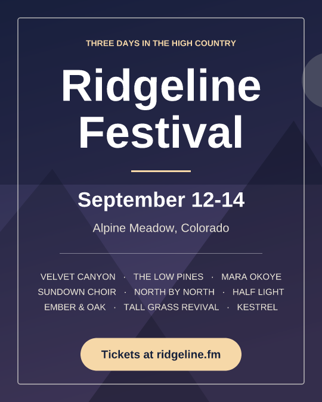
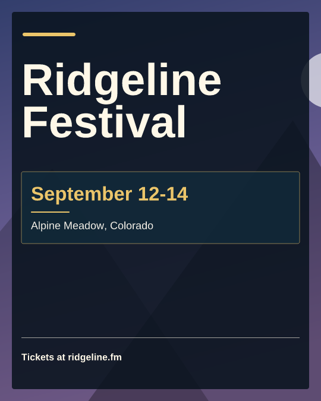
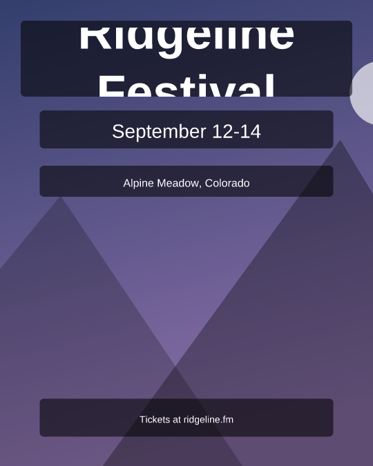
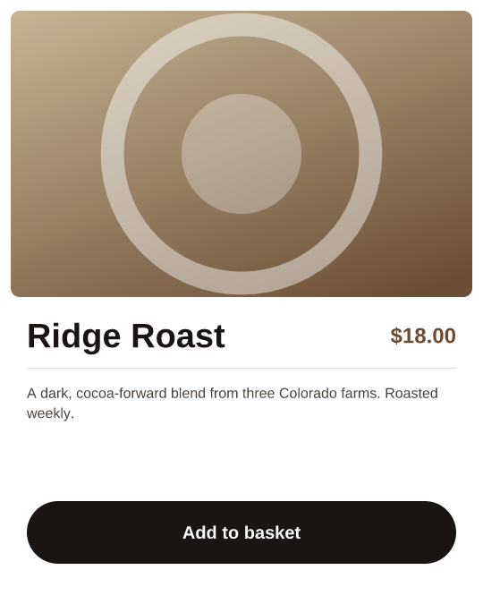
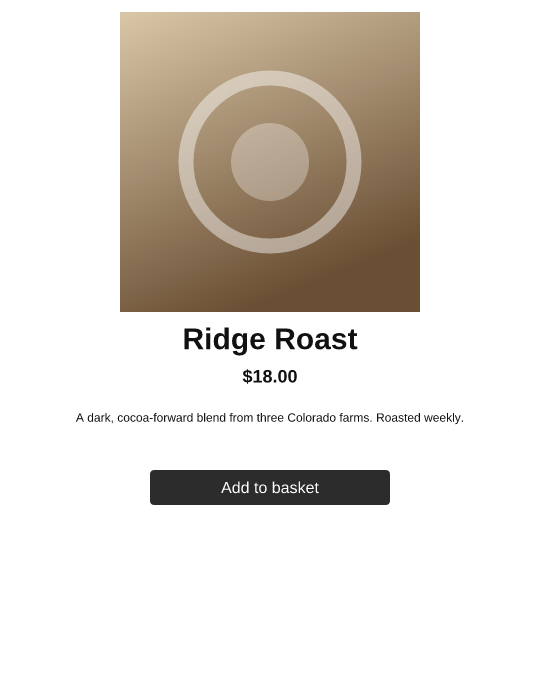

Canvas Agent Bench
Does an AI agent lay out a page better when it edits coordinates, states relations, or rewrites the whole document as code? And does seeing its own work help more than the choice of tools?
The bench gives one agent loop a 2D canvas document and a brief — fix this clipped headline, set this menu so every dish name fills two lines, put this page in dark mode — through one of three tool surfaces: coordinate (move and resize by numbers), relational (place this below that, fit this text to its box) and document-as-code (read and rewrite the JSON). Each run gets one of six feedback conditions, from nothing to a rendered screenshot plus a structured description. Deterministic checks score the result; a pass is a run that satisfies all of them.
1 · The first tasks were too easy
The first task set (v1, 23 tasks) was meant to land around a 30% pass rate so that differences between surfaces and feedback would have room to show. It didn't. Across 552 runs on four cheaper models, every one closed most of the gap between the starting page and a perfect one:
| Model | Improvement | 95% interval | Cost/run |
|---|---|---|---|
| GPT-5.6 Terra | 97.7% | 94.8–99.6 | $0.027 |
| GPT-5.6 Luna | 97.0% | 94.0–99.2 | $0.016 |
| Haiku 4.5 | 93.0% | 88.4–96.8 | $0.077 |
| Gemini 3.8 Flash | 83.5% | 75.3–90.9 | $0.146 |
Improvement is the share of available headroom a run closed: 0% leaves the page as found, 100% satisfies every check. One repeat, no feedback and screenshot + description.
The same brief, five models. The GPT-5.6 pair cleared every check for two or three cents. Haiku 4.5 clipped its own title. Gemini 3.8 Flash ran out of output tokens while writing the document and left the canvas empty.



What the checks couldn't see
Both of these cards satisfy every constraint. One is composed; the other sits timidly in the middle of an empty canvas. Briefs now state minimum sizes and coverage for exactly this reason.


2 · Two harness bugs the pilots found
Pilots exist to break the harness before it costs a real result. Two findings changed the tools every surface gets, and both are logged as deviations.
No way to set the background
The coordinate and relational surfaces had no tool for the canvas background, and the dark-mode check reads it. The agent noticed (“there's no tool to set the canvas background directly”) and painted a full-canvas dark rectangle. Identical page, 56% instead of 100%. Coordinate and relational now have set_background; document-as-code always could set it by rewriting the document.


Relational couldn't resize, so it rebuilt
Relational could only size an element when creating it. To fix a clipped headline, the agent deleted the headline and paragraph and made new ones. The page looks fine, but checks find elements by id, so the rebuilt page scored 5%. Relational now has set_size, alignment margins, fit_text modes for “fill this box” and “at most N lines”, and an around relation for radial layouts.


3 · Geometry is solved
Hardening the task set (v2) with exact gaps, grids, insets and rotations didn't bite. In 138 calibration runs Opus 5 almost never missed stated geometry; a strong model computes exact arithmetic exactly. The few misses were measurement: type that didn't quite fill its space, or broke onto one line too many.
To look for hardness that wasn't contrived, we took a cue from the Web Stories editor and added shapes (ellipse, polygon, star) and linear gradients, then built four prototypes: a sunburst badge, a clock at ten past ten, a Bauhaus study built from tangencies, and a justified photo gallery with exactly one valid row partition. Even the cheapest model solved the geometry. GPT-5.6 Luna and Terra each passed 75% of 24 runs, and nine of the twelve misses were one constraint: a title set as large as it goes on one line.


Reference solutions, rendered by the bench. Every task has one that scores 100%, so a miss is never the task's fault.
4 · Measurement is (almost) solved
So we built a family around the one thing that failed: text the agent has to measure without seeing it. Each page has a dozen or more pieces of text that must fill their space exactly: as large as they go on two lines, boxes hugging their text, a timeline spine that runs exactly as far as its entries.


First version: the older models
Pass rate by task, six runs a cell (three surfaces × two feedback conditions, one repeat). This is where the 30% target looked in reach.
| Task | Opus 5 | GPT-5.6 Terra | GPT-5.6 Luna | Sonnet 5 | Haiku 4.5 |
|---|---|---|---|---|---|
| contents | 100% | 83% | 67% | 33% | 0% |
| contents (wide) | 67% | 50% | 50% | 33% | 0% |
| menu | 100% | 100% | 67% | 33% | 17% |
| programme | 33% | 33% | 17% | 33% | 33% |
| timeline | 100% | 50% | 67% | 33% | 17% |
| Cost per pass | $0.71 | $0.19 | $0.04 | $0.76 | $1.49 |
Sonnet 5's row is partly an output-token ceiling, not the model: 17 of its 30 runs stopped at max_tokens. The ceiling was raised to 32,000 for everything after this.
Rebuilt harder: the 5.5 models
Every task was rebuilt to carry the programme's load (twelve or more independent measurements). Then Opus 5.5 and Sonnet 5.5 arrived.
| Task | Opus 5.5 | calls · cost/run | Sonnet 5.5 | calls · cost/run |
|---|---|---|---|---|
| contents | 100% (6/6) | 108 · $0.98 | 83% (5/6) | 88 · $0.33 |
| menu | 100% (6/6) | 64 · $0.56 | 50% (3/6) | 76 · $0.26 |
| programme | 100% (6/6) | 64 · $0.59 | 83% (5/6) | 61 · $0.25 |
| timeline | 100% (6/6) | 39 · $0.36 | 83% (5/6) | 40 · $0.21 |
| Cost per pass | $0.62 | $0.35 |
Opus 5.5 passed all 24 runs. The programme had held Opus 5 to 33%. One model generation later, a dozen invisible measurements per page don't separate anything: the model measures what it can't see, by iterating on feedback or reaching for fit_text, as reliably as it computes geometry. Sonnet 5.5 misses more often, but at less than half the price per run it is still the cheaper way to a pass.
5 · What's next: cost to pass
Chasing a 30% pass rate on the newest frontier model means writing tasks to defeat the model rather than tasks people actually do. So the question changes. When every surface eventually gets the page right, the difference that matters is what it costs to get there.
The primary outcome is now cost to pass: a cell's total agent spend, failed runs included, over its passes (a zero-pass cell divides by 0.5), combined across tasks by geometric mean. Surfaces and feedback conditions are compared as paired ratios within task, with a task-clustered bootstrap. A difference counts as resolved when its interval excludes 1, and as meaningful at 15% or more. The confirmatory grid of 1,458 runs on Opus 5.5 is fixed in advance and waiting to run.
The relational surface's pilot profile already hints at why this matters: on the v1 tasks it took more turns and more tokens per run than the other two surfaces for similar quality. Whether that holds on the current tasks is exactly what the grid is blinded to until it runs.